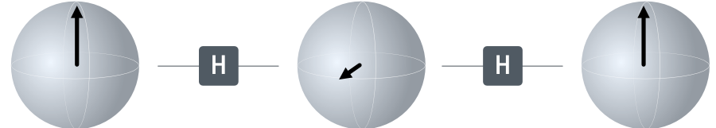

Quantencomputer – Superposition
Während sich das X-Gatter ein bisschen so verhält, wie du es auch vom NICHT-Gatter eines herkömmlichen Computers kennst, wirst du festgestellt haben, dass das sogenannte Hadamard-Gatter H dafür sorgt, dass wir in ungefähr 50% der Fällen 0 und in den anderen 50% 1 messen.
Die Anwendung des Hadamard-Gatters bringt das Qubit also in einen Zustand, bei dem die Wahrscheinlichkeit 0 bzw. 1 zu messen, jeweils 50% beträgt.
Damit hast du eine der Besonderheiten aus der Welt der Quantencomputer kennengelernt:
Ein Qubit kann den Wert 0 und den Wert 1 annehmen oder in einer Superposition aus 0 und 1 sein. Dann hat es eine bestimmte Wahrscheinlichkeit als 0 bzw. 1 gemessen zu werden. Eine Messung zerstört allerdings die Superposition – die Messung kann also nicht wiederholt werden.
Denken wir noch einmal an das Kugelmodell, das wir bei Bits bereits kennengelernt haben und bei dem wir Pfeil runter als 0 und Pfeil hoch als 1 interpretiert haben. Betrachten wir nun Qubits, kann diese Kugel auch anders gedreht sein, sodass der Pfeil in eine andere Richtung als oben oder unten zeigt. Nach Anwendung des Hadamard-Gatters auf ein Qubit im Zustand 1 zeigt der Pfeil nach vorne. Messen wir, fällt die Kugel mit einer gewissen Wahrscheinlichkeit in den Basiszustand oben oder in den Basiszustand unten zurück.

Wie sich eine Messung auf den Zustand des Qubits auswirkt, kannst du ausprobieren, indem du auf Auswerten klickst.
Ganz schön kompliziert...
Superposition ist deshalb so schwer vorstellbar, weil es nur bei sehr kleinen Objekten wie Elektronen oder Photonen (Lichtteilchen) auftritt. Bei größeren Objekten lässt sie sich nicht beobachten. Einen Aspekt können wir uns aber auch mithilfe von Münzen demonstrieren: Wenn wir eine Münze werfen, hat sie eine 50/50-Wahrscheinlichkeit auf Kopf bzw. auf Zahl zu landen. Wir können sagen, dass sich die Münze in einer Superposition aus Kopf und Zahl befindet. Wenn sie landet, hat sie aber einen eindeutigen Zustand, entweder Kopf oder Zahl – die Superposition wird also zerstört.
Hadamard-Gatter zweimal anwenden
Es wirkt zunächst so, als würde das Hadamard-Gatter jede im Qubit gespeicherte Information löschen, denn wenn egal ob Startwert 1 oder 0, die Wahrscheinlichkeit beträgt in beiden Fällen jeweils 50% – nach unserer Messung wirken die beiden Zustände nicht unterscheidbar. Aber ist das wirklich so?
Hinweise
- Diesmal musste du Messungen nicht mehr selbst durchführen. Sobald du etwas am Schaltkreis änderst, wird dieser ausgewertet und die Statistik entsprechend aktualisiert.
Auswertung
Nach 1000 Messungen zeigt sich folgende Ergebnisverteilung:
Lösung
Zweimaliges Anwenden bringt das Qubit wieder in den Ausgangszustand zurück. Daraus können wir schließen, dass die im Qubit gespeicherte Information nicht verloren gegangen ist. Das heißt, auch wenn die Messergebnisse rein zufällig wirken, ist das Qubit dennoch in einem genau definierten Zustand.
Kombination verschiedener Gatter
Neben dem H-Gatter verfügen Quantencomputer noch über weitere Gatter. Eines davon ist das T-Gatter, das man sich als Drehung um 22,5° entlang des Äquators unserer Kugel vorstellen kann.

Auswertung
Nach 1000 Messungen zeigt sich folgende Ergebnisverteilung:
Lösung
Wenden wir vor und nach dem
T-Gatter ein
H-Gatter an, erhalten
wir bei Startwert
0 mit 85%
Wahrscheinlichkeit als Messergebnis
0 und nur mit 15%
1.
Das bedeutet, dass jede noch so kleine Änderung des Zustands zwischen
den beiden Hadamard-Gattern (bspw. durch ein anderes Gatter wie das
T-Gatter) durch die
Auswertung des Schaltkreises aufgedeckt werden kann.